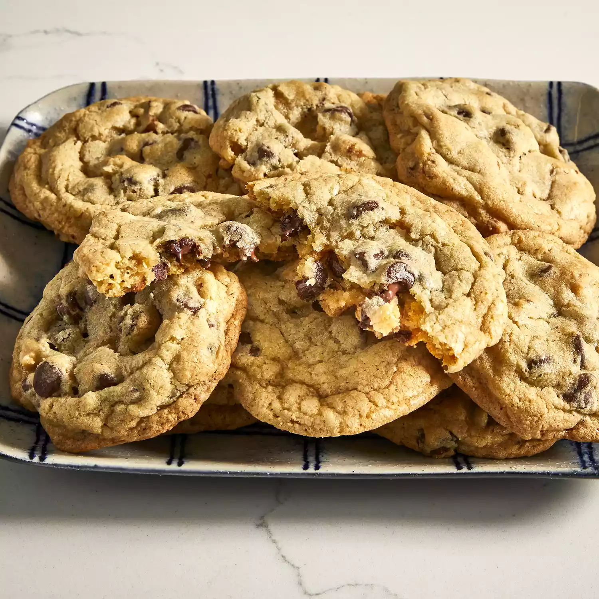

Chocolate Chip Cookies

This is the best chocolate chip cookies recipe ever!
No funny ingredients, no chilling time,
etc. Just a simple, straightforward, amazingly delicious,
doughy yet still fully cooked, chocolate chip cookie that
turns out perfectly every single time!
- Butter (softened) - 1 cup
- White sugar - 1 cup
- Packed brown sugar - 1 cup
- Eggs - 2
- Vanilla extract
- Baking soda - 1 tsp
- Hot water - 2 tsp
- Salt - 1/2 tsp
- All-purpose flour - 3 cups
- Semisweet chocolate chips - cups
Steps
- Preheat the oven to 350℉
- Beat butter, white sugar, and brown sugar with an electric mixer
in a large bowl until smooth. Beat in eggs, one at a time, then
stir in vanilla. Dissolve baking soda in hot water. Add to batter
along with salt. Stir in flour, chocolate chips, and walnuts.
- Drop spoonfulls of dough 2 inches apart onto greased baking sheet
- Bake in the preheated oven until edges are nicely browned, about
10 minutes. Cool on the baking sheets briefly before removing to
a wire rack to cool completely.
Back to top
Return to Homepage